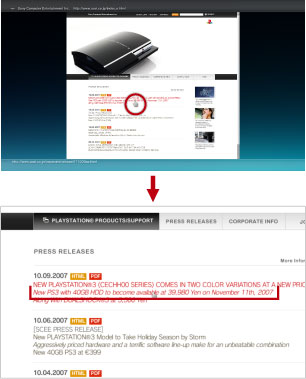

Ağ > Web sayfasının görüntüleme boyutunu değiştirme
Web sayfasının görüntüleme boyutunu değiştirme
Web sayfaları PS3™ sisteminin video çıkış ayarlarının kombinasyonuna ve bağlı TV'ye göre çok küçük veya çok büyük görüntülenebilir. Bu durumda, görüntüleme boyutunu ayarlamak için aşağıdaki yöntemi kullanabilirsiniz.
Yakınlaştırma özelliğini kullanma
İmlecin optimum boyutta bulunduğu yerde otomatik olarak ekrandaki alanı büyütür. Optimum büyütme oranı, imlecin bulunduğu yerde otomatik olarak hesaplanır. İmleci yakınlaştırmak istediğiniz alana yerleştirin,  düğmesine basın ve sonra seçenekler menüsünde
düğmesine basın ve sonra seçenekler menüsünde  (Görüntüle) altında [Yakınlaştırma] öğesini seçin.
(Görüntüle) altında [Yakınlaştırma] öğesini seçin.
Metni yakınlaştırma örneği
Sistem, imlecin bulunduğu alandaki metnin paragrafının boyutuna göre büyütme oranını hesaplar ve sonra metni büyütme modunda görüntüler.

Görüntüyü yakınlaştırma örneği
Sistem, imlecin bulunduğu alandaki görüntünün boyutuna göre büyütme oranını hesaplar ve sonra görüntüyü büyütme modunda görüntüler.

Çözünürlüğü değiştirme
Web sayfasının ekran çözünürlüğünü değiştirin. Web sayfasının görüntüsünü PS3™ sisteminin video çıkış çözünürlüğünü eşleştirmek için kolayca görüntülenebilen bir boyuta ayarlayabilirsiniz. düğmesine basın ve sonra seçenekler menüsünden  (Araçlar) altındaki [Çözünürlük] öğesini seçin.
(Araçlar) altındaki [Çözünürlük] öğesini seçin.
PS3™ sisteminin video çıkış çözünürlüğü 1080p veya 1080i olarak ayarlandığında [-1] veya [-2] ayarlanırsa, ekran büyütülür ve görüntülenmesi kolaylaşır. PS3™ sisteminin video çıkış çözünürlüğü Standart (NTSC: 480i / PAL: 576i) veya 480p / 576p olarak ayarlandığında [+1] veya [+2] ayarlanırsa, ekran küçültülür ve görüntülenmesi kolaylaşır.
PS3™ sisteminin video çıkış çözünürlüğü [1080i] olarak ve [Çözünürlük] [-2] olarak ayarlandığında

PS3™ sisteminin video çıkış çözünürlüğü [Standart (NTSC: 480i / PAL: 576i)] ve [Çözünürlük] [+2] olarak ayarlandığında